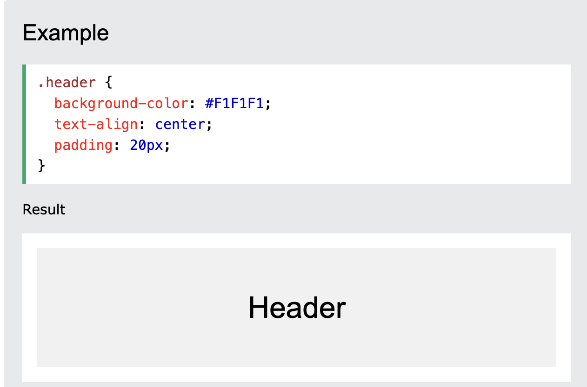

CSS Website Layout
A website id often divided into headers, menus, content and a footer.
There are tons of different layout designs to choose from. However, the structure above, is one of the most common, and we will take a closer look at it in this tutorial.
Header
A header is usually located at the top of the website (or right below a top navigation menu). It often contains a logo or the website name:
Content
The layout in this section, often depends on the target users. The most common layout is one (or combining them) of the following: 1-column (often used for mobile browsers) 2-column (often used for tablets and laptops) 3-column layout (only used for desktops)
We will create a 3-column layout, and change it to a 1-column layout on smaller screens: